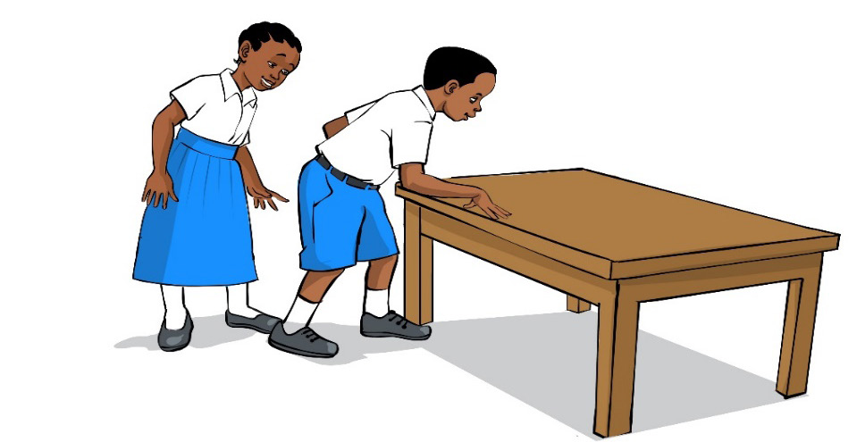

Kazi ya kufanya 1:
Kupima urefu wa darasa1.Pima urefu wa darasa kwa kutumia hatua za miguu.
2.Rekodi urefu wa darasa.
3.Tambua/onesha kwa kushirikiana na mwenzako; naye apime na kurekodi urefu wa darasa kwa kutumia hatua za miguu.
4.Linganisha hatua za miguu zilizorekodiwa kutoka 2 na 3.
5.
Je, idadi ya hatua mlizopima zinatofautiana?
Eleza sababu ya jibu lako.
Vipimio rasmi vya urefu
Vipimio rasmi vya urefu vinakubalika na vinatoa majibu yanayofanana mahali popote vinapotumika.
Vipimio hivyo ni pamoja na rula na futikamba.
Vipimio hivi hupima urefu katika vipimo kama vile milimeta (mm), sentimeta (sm), meta (m) na kilometa (km).